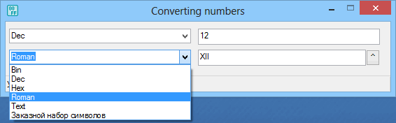

Converting_numbers
Назначение
Конвертирует числа из одной системы счисления в другую.

Взаимосвязанные
Converting_numbers
Возможности:
1. Преобразует между стандартными системами счисления: десятичной, двоичной, шестнадцатеричной, римской.
2. Преобразует число в текст прописью
3. Преобразует произвольно заданный набор символов. Например для конвертации из десятичного числа в шестнадцатеричное используя "заданный набор символов" нужно указать последовательности 0123456789 и 0123456789ABCDEF. В качестве последовательности можно указать любой набор символов доступных на клавиатуре, например алфавит.
В ini можно указать, дополнять ли предшествующими нулевыми символами выходное число согласно входному.